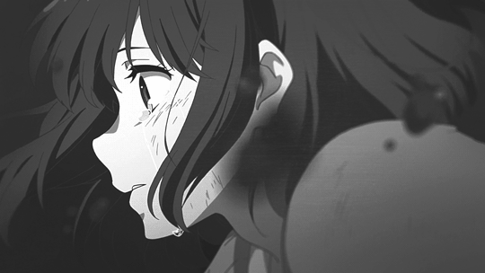

Ce petit bout de chemin te fait réaliser à quel point ton love interest est importante pour toi. Vous faites une conversation profonde puis vous vous embrasser pour la première fois. Soudainement la musique romantique tourne en musique tragique et tu fois une flèche se planter dans son dos. Rip love interest.
Tu te retourne pour faire face au deuxième chevalier de l'ombre, Drakkar Noir. Rongé par le deuil et la rage, tu fonces droit dans lui en criant à pleins poumons. Le reste est flou mais quand tu reviens à toi, tu es seul avec son corps à tes pieds. Tu aquiers une nouvelle technique, le "くわはありません (Kuwa wa arimasen)"
Tu te rends à l'entrée du monastère ou t'attends le dernier des chevalier de l'ombre, Danielle. Elle est figé, debout, son ultra méga long katana en mains. Elle te dit également un long monologue de villain que tu ne comprends pas trop vu qu'elle porte un casque et que vous êtes quand même à une bonne dizaine de mètres de distance. Tu brandis quand même ton arme en sa direction.